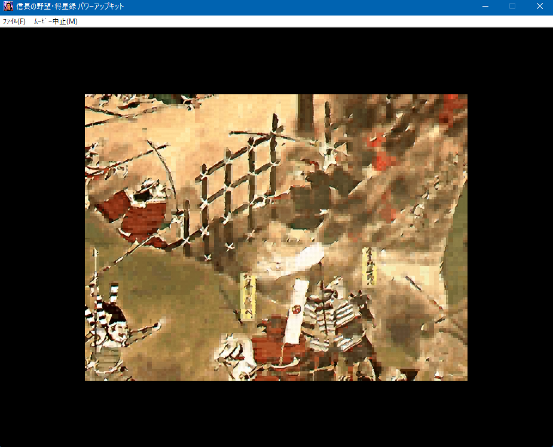
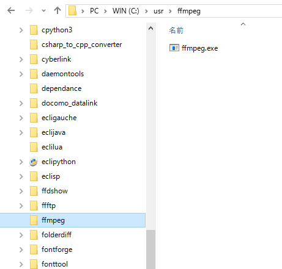
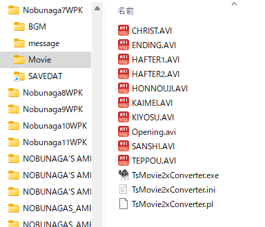

あまりにも小さすぎて悲しくなるサイズと言えるでしょう。
このページでは、画像を拡大するツールとして非常に有名な、「waifu2x-caffe」を使い、
解像度をアップコンバートすることで、 ある程度、この問題への解決を狙います。
通常の「Adore PremiereやAdobe AfterEffectsなど映像ツールで解像度を２倍にする」といった一般的手法とは違い、
「高度で多計算による解像度の２倍化」となりますので、変換には相当時間がかかります。
なお、ここに記載されている内容やツールは、将星録に限定されるものではなく、
「動画の解像度を綺麗な形で２倍にする」という汎用的な目的にもかなうモノとなっています。
(起動時のタイトルロゴや終了時のKOEIロゴと似たサイズになるので見た目が自然になる)

Windows 7 64bit 以降が必要です。(32bitだと無理です)
FFmpeg/FFprobe をインストールしてください。
まずは、該当ページからffmpegをダウンロードします。
「ffmpeg-N-*****-*********-win64-gpl.zip」
を解凍すると、実はファイルやディレクトリが沢山あります。
しかし、必要なのファイルは「bin」フォルダの中にある「ffmpeg.exe と ffprobe.exe」の２つだけです。
このffmpeg.exeを適当なツールっぽいフォルダに移動し、以後これを利用するようにします。

この２つを適当なフォルダにコピーしてください。
有名なコマンドアプリケーションですので、それなりのディレクトリにコピーしておくことをお勧めします。
waifu2x-caffe
をインストールしてください。
インストールの詳細は、天翔記のサイトの「画像の縮小・拡大」に掲載しています。
全体で100メガを超えるファイルサイズのツールですが、サブディレクトリも含め、ディレクトリ一式必要です。
2015年以降、急速に有名になったアプリケーションですので、
それなりのディレクトリにコピーしておくことをお勧めします。
将星録95(等)の動画を２倍に拡大コンバートするツールとなります。
(実際には将星録に限らず汎用目的で利用可能です)
映像については、waifu2x-cafeeを通して解像度を２倍化し、lib264のロスレスで、
音声については、元の動画の音声そのままのデータをコピーするようなツールです。
TsMovie2xConverterの置き場所は好きなディレクトリに配置してもらって良いのですが、
今回は将星記のMOVIEフォルダに配置してしまいましょう。

TsMovie2xConverter.iniをテキストエディタで編集してください。
この.iniファイルが正しく編集されていないと全く動作しません!!
# ffmpegのフルパスを設定してください。
$ffmpeg = 'C:\usr\ffmpeg\ffmpeg.exe';
$ffprobe = 'C:\usr\ffmpeg\ffprobe.exe';
# waifu2x-cafee-cuiのフルパスを設定してください。
$waifu2x = 'C:\usr\waifu2x-caffe\waifu2x-caffe-cui.exe';
# gpuが使えるのは、NVIDIA製GPUのみです。IntelやRadeonの人は "cpu" と書き換えてください。
$process = "gpu";
# コンバートする拡張子
$extension = ".avi";
「TsMovie2xConverter.exe」を実行してください。
ツールの導入や、iniの設定が正しければ、以下のように変換が始まります。
MOVIEフォルダの「dst」というサブフォルダに変換後の縦横２倍になった大きなムービーが出来上がります。
この出来上がった大きなサイズのムービーを、元の小さなムービーに上書きすれば完成です。